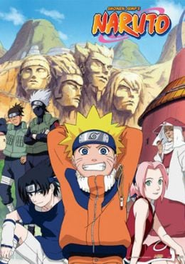

Naruto:
Naruto, un aprendiz de ninja de la Aldea Oculta de Konoha es un chico travieso que desea llegar a ser el Hokage de la aldea para demostrar a todos lo que vale. Lo que descubre al inicio de la historia es que la gente le mira con desconfianza porque en su interior está encerrado el demonio Kyubi que una vez destruyó la aldea, y que el anterior líder de la misma tuvo que encerrar en su cuerpo siendo aún muy pequeño, a coste de su vida. Aunque sus compañeros no saben esto, tampoco le aprecian porque es mal estudiante y siempre está haciendo bromas. Sin embargo, la forma de actuar y la determinación de Naruto demuestran a los demás que puede llegar muy lejos, y el recelo de los otros chicos se va disipando.
Ver serie
One Piece:
Una historia épica de piratas, donde narra la historia de "Monkey D. Luffy" quien cuado tenia 7 años, comió accidentalmente una "Akuma no mi"(Futa del diablo) la cual le dio poderes de goma. Por otra parte "Gol D. Roger" conocido como "El rey de los Piratas" quien fuera ejecutado por la Marine, habló antes de morir, acerca de su famoso tesoro "One Piece" escondido en la "Gran line". Esta noticia desato la gran era de la piratas lanzando a incontables piratas a ese lugar, en busca de "One Piece" el tesoro perdido. Diez años después, Luffy inspirado en "Gol D. Roger" y un pirata de nombre Akagami no Shanks (Shanks el pelirrojo) se convierte en pirata deseando ser el próximo "Rey de los Piratas" y zarpar para conocer amigos y tener aventuras con ellos, teniendo como meta encontrar el "One Piece".
Ver serie